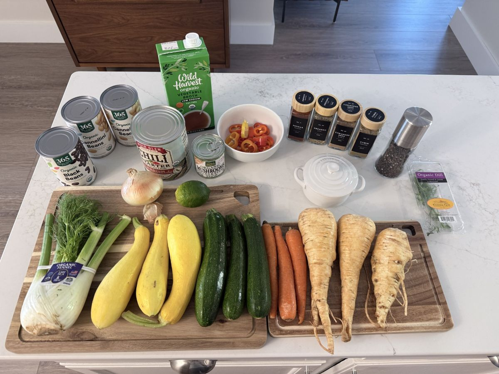

For several years now, our kitchen and lifestyle philosophy have been deeply informed by the Blue Zone concept. We’ve watched every television documentary mapping these remarkable longevity hotspots across the globe, collected Dan Buettner’s books and cookbooks, and followed his ongoing work on socials. Striving to live and cook with the intentionality of the world's longest-living communities isn't just an occasional experiment for us—it is a daily rhythm we actively embrace.
Lately, certain dietary cornerstones from those regions have profoundly intrigued us, particularly the indigenous agricultural trinity of corn, black beans, and zucchini or summer squash. That harmonious combination was the primary spark that set this recipe in motion. At the same time, practical kitchen needs joined the mix: we had a collection of extra seasonal vegetables from a recent shopping trip sitting in the fridge that needed a purposeful home before our next market run.

The Starch Engine & Lessons from the Bisque
Like all the recipes that make it onto our pages, this stew represents an ongoing evolution of adaptation, creative exploration, and intuition. When we developed our Smoky Adobo & Root Vegetable Bisque, we learned a vital lesson about plant-based creaminess: you don't need heavy dairy or a flour-based roux to achieve a velvety texture. Instead, you can harness the natural starch locked inside the beans.
Applying that principle here, we built a pureed cannellini thickening engine—blending a whole can of cannellini beans with a splash of broth to rupture their starch cells, creating a natural, stable emulsion that holds the rich tomato broth together seamlessly, even after days in the refrigerator.
Smart Architecture: The Make-Ahead Hold-Back
We also built this recipe with advanced entertaining and make-ahead meal prep in mind. One common pitfall of long-simmered vegetarian stews is that delicate herbaceous notes and bright citrus acids tend to flatten out or degrade under sustained refrigeration and reheating.
To solve this, we implemented a make-ahead hold-back architecture: we let the stew build a deep, stable spice foundation during cooking, while reserving fresh lime juice and finely chopped fennel fronds in a damp paper towel in the fridge. Stirring those fresh elements in right at the table wakes the whole dish up instantly.
A First-Try Triumph
It is always immensely satisfying when a culinary experiment works brilliantly right out of the gate. This stew came together on its very first try with absolute harmony.
It proved to be so deeply comforting, vibrant, and nourishing that it carried us through a cozy family dinner, a satisfying follow-up lunch, and still left precious extra portions safely packed away in the freezer—ready to be pulled back out on those chilly upcoming months when we crave an effortless, warming bowl of hearthside comfort.
Ready to bring this to your table?
Get the exact recipe and step-by-step instructions for our Blue-Zone-Inspired Fall Veggie Stew →